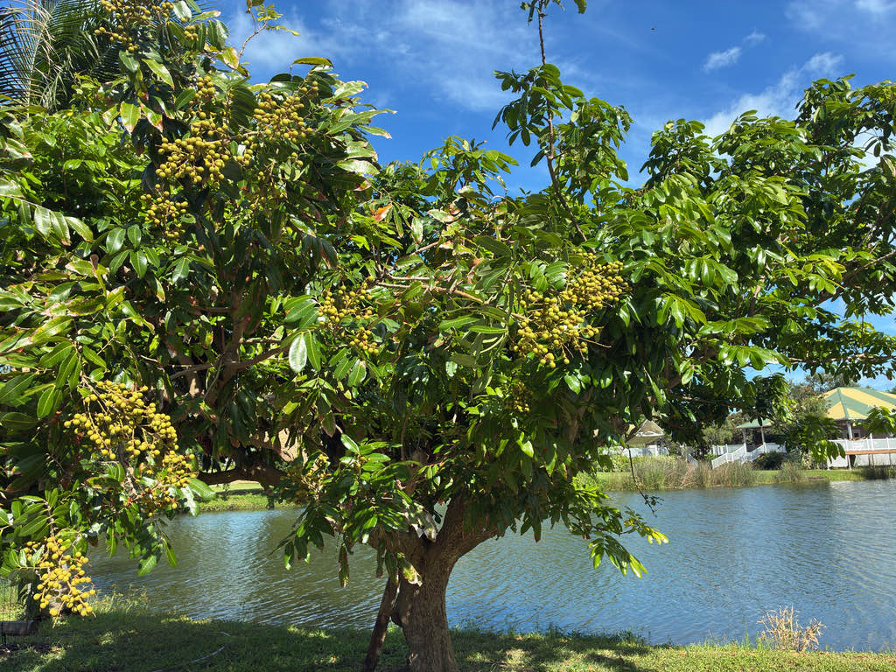

- Crack the thin tan shell and inside is translucent, juicy flesh wrapped around a single glossy black seed — peeled, it looks startlingly like a real pupil and iris, which is exactly what the Cantonese name lóngyǎn means: dragon's eye.
- Longans are notoriously erratic bloomers, but growers found a wild fix: a soil drench of potassium chlorate — the same compound used in matches and fireworks — reliably shocks the tree into bloom on demand, even off-season.
- It is the close cousin of the lychee, with a similar sweet, musky flavor.
- The fruit hangs in heavy drooping clusters, sometimes by the hundreds.
Native to southern Asia, from southern China through Southeast Asia. Long cultivated for its fruit and now grown commercially in tropical and subtropical regions, including South and Central Florida.
- Longan is a member of the soapberry family and a close relative of the lychee and rambutan. Its fruit is smaller and less flashy than lychee but keeps and ships better, and many find the flavor sweeter and muskier.
- The name "dragon's eye" comes from the peeled fruit: a sphere of translucent, pale flesh with a single round, glossy black seed showing through the center — convincingly eye-like. The flesh is eaten fresh, dried, or in soups and desserts across Asia.
- The tree is a heavy, sometimes erratic bearer — loading branches with hanging clusters in good years — and prefers a warm climate with a brief cool spell to trigger flowering.
The small cream flowers are excellent bee plants and a notable nectar and honey source. Ripe and fallen fruit feeds birds and small mammals.
A medium evergreen tree with a dense, rounded, spreading canopy.
Small, yellowish-cream, in large branched clusters (panicles); rich in nectar. Each panicle opens in three sequential waves: staminate (male) flowers first, then hermaphroditic flowers acting as females, then a second wave of hermaphroditic flowers acting as males — a relay designed to maximize cross-pollination.
Round, tan to light brown, thin-shelled, in drooping clusters; pale juicy flesh around one shiny black seed.
Pinnately compound, glossy, with leathery oblong leaflets.
Heavy hanging clusters of round, tan-shelled fruit. Peel one to find the translucent flesh and single dark "dragon's eye" seed.
The seed is the one thing to watch: longan seeds contain saponins that can cause vomiting, diarrhea, and stomach upset in dogs — and are not edible for people either, being hard and bitter. Keep whole fruit away from dogs; the flesh is fine for people.
The fruit flesh is safe and widely eaten fresh, dried, or canned. The hard shell poses a choking hazard for small animals. Otherwise the tree is harmless to handle.
Longan is self-fertile — a single tree will set fruit. However, cross-pollination between trees typically improves crop size and quality.
Nearly all Florida trees are the 'Kohala' cultivar, developed in Hawaii and evaluated for south Florida conditions by UF/IFAS. Several newer Thai cultivars are under evaluation but not yet widely planted.


- © David McSwain (CC-BY-NC), via iNaturalist
- © Maria Escobar (CC-BY-NC), via iNaturalist
- © Harrison Mello (CC-BY-NC), via iNaturalist